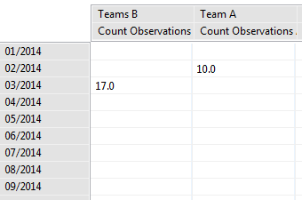

A summary summarizes the data and allowing for grouping into different categories. Summaries results can only be viewed in tables.
 |
Example Summary Query |
Items that can be summarized include data model categories (total number of snare observations), numeric data model attributes (total number of guns), and mission track length. Multiple values can be computed in a single query.
The above values can be grouped by survey attributes (survey, mission), mission properties, sampling unit, observer, time (year, month, etc), areas (management sectors, administrative areas), data model categories and list or tree data model attributes. Multiple group-bys can be selected for a single query.